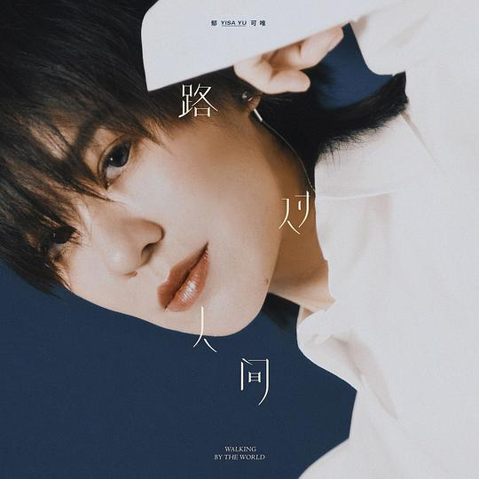

宝藏歌曲合集
# 中文歌曲
# 路过人间

https://baike.baidu.com/item/%E8%B7%AF%E8%BF%87%E4%BA%BA%E9%97%B4/23218761?fr=aladdin
郁可唯专辑同名主打歌曲〈路过人间〉，她用歌声慢慢堆栈人生交会的各种情绪，反覆琢磨生活的每一场相聚与别离，提供给在生命中执着各种情感的你我，另一种豁达思考的视角。一开口旋即引人入胜，华语乐坛实力女声郁可唯，即将在今年推出全新个人大碟，在新专辑同名主打歌曲〈路过人间〉的旋律中，有别于讲述情感与爱情的浓烈，郁可唯反覆思考几年来关于人际关系的体悟与感触，唱出不同以往的深刻温暖，「长长一个人生，它其实是很短很短的一个时候。」郁可唯想以这首带有深意却琅琅上口的新歌曲，散播她自身正向温暖的人生观，同时拥抱每一个执着于离别的人，提醒他们往后人生会有更多更美好、更惊喜的相遇。
# 云烟成雨
https://baike.baidu.com/item/%E4%BA%91%E7%83%9F%E6%88%90%E9%9B%A8/22195612?fr=aladdin
《云烟成雨》是由主唱心怡和吉他手佩岭组成的快乐民谣小组合房东的猫演唱的歌曲，也是房东的猫为国产青春爱情治愈动漫《我是江小白》量身打造的主题曲，《我是江小白》讲述的是一个离别与重逢的故事，《云烟成雨》的作词者墨鱼丝在网易云音乐里这首歌的留言是“离别是为了更好的相遇。有人说是一首好歌，成就了一部动画；也有人说一部好动画，成就了一首歌。 不论是歌成就了动画，还是动画成就了歌。对于听歌的人来说，看动画能够加深对歌的理解；听歌能够在看动画的时候更能渲染情绪，全身心沉浸于故事中，对故事也有了更深的理解。
# 美好事物
https://baike.baidu.com/item/%E7%BE%8E%E5%A5%BD%E4%BA%8B%E7%89%A9/19841687?fr=aladdin
“你说要忘却所有不愉快的片段，把美好事物纯真地走完。把起舞的今日写成诗篇，多年后也不遗憾。把漫长的故事变成短暂，才配得起勇敢。”《美好事物》传递给我的，更多是忘却那些不愉快的片段，好好珍惜美好的事物。圆满的结局并非简单，但是请相信美好，这会让你更能勇敢面对这个复杂的世界。我们分开已经很久了，但始终忘不掉的是我，听到“把蛮长的故事变成短暂”而悲感的也是我。我喜欢你，我归于是因为你，但是离开归我。我怕是要放下你了。尝试着去勇敢，去追逐自己的美好事物，也不妄来这人间一趟，万不可错过了这个时代。
# 走马
https://baike.baidu.com/item/%E8%B5%B0%E9%A9%AC/16957189?fr=aladdin
陈粒慵懒的声线诉说着迷途爱人的无奈成长。“过了很久我终于抬头看，你就在对岸走的好慢好慢，你还是走了，走了，走了，你看”最心酸的莫过自己幡然醒悟，而爱人却没有在原地等候，他离开的坚定缓慢，你看得见他却不再同行。你终于接受了他离开的事实，一句“你看”却无人再回应。“我昨天晚上梦到你了 你就从我身边经过 我声泪俱下 你都没瞟我一眼”岁月悠长，山河无恙，你我都不复当年模样。从此山高路远，不忆不念。
# 英文歌曲
# Anywhere is
https://baike.baidu.com/item/Anywhere%20Is
个人就是特别喜欢英文玩这种文字上的trick，高度押韵， 再配合此曲旋律，听起来抑扬顿挫， 特别带感。
歌词本身也很有哲理感，大量的排比、对比，看似充满迷茫与矛盾，却隐隐有股温婉但坚定的力道，特别是最后一句勾出来的「黑暗中的曙光」，正中我的软肋！完全零抵抗力……
# just one last dance
https://baike.baidu.com/item/just%20one%20last%20dance/565215?fr=aladdin
一首旋律非常优美的英文歌曲。歌曲表达的感情应该就是恋人即将分手痛苦又无奈的心情，歌曲前段如同恋人的丝丝低语，温婉而浪漫，以一个回忆作为开头，用一种仿如异国情缘的浪漫道来，中段则更为绵长悠远，后段则愈益激烈，以致甚于声嘶力竭，将至歇斯底里，恋人啊，分离是最磨人的痛。
# YOU RAISE ME UP
https://baike.baidu.com/item/YOU%20RAISE%20ME%20UP/10831597?fr=aladdin
每次听到这首歌脑海中就会出现那些感人的画面，气势恢宏的交响乐和悠扬的苏格兰风笛，加上唱诗班的合声以及Westlife完美的演唱，给人心灵上都能带来震撼。这是一首翻唱歌曲，个人还是喜欢westlifed这个版本。
La Isla Bonita
https://baike.baidu.com/item/La%20Isla%20Bonita/1022508?fr=aladdin
法国美女小天后Alizee用热情、奔放的拉丁古典吉他音乐，桑巴鼓点的节奏展现一幅热带岛屿绮丽的风光。节奏感极强，曲调欢快，（La Isla Bonita为西班牙语,即美丽的海岛）
# 韩国歌曲
# Blueming
https://baike.baidu.com/item/Blueming/24151610
人在家中坐，一位天上来，先行曲《Love Poem》，没有实体专辑，没有MV播放量，仅靠音源获得了10月19号音乐银行和11月17号人气歌谣的一位，展现了IU的强大实力。IU在音源发表之前的直播说：“她不在意成绩，希望大家听到这张专辑能感到幸福就好。冬天来了，希望通过音乐也好，电视剧也好，电影也好，大家都能从心里感受到一些安慰。”MV的最后灰色的气球和IU手中的蓝色气球一起放飞到天空中，代表着告白成功，《Blueming》意指蓝色的绽放，其实也就是爱情的绽放。歌曲中的“要和我一起绽放这百万朵玫瑰吗？”期待IU能遇到一个和她一起绽放百万玫瑰的那个人。
# 삐삐
https://baike.baidu.com/item/%EC%82%90%EC%82%90
这首歌的hiiu为私生饭所写，希望大家不要过度关注她的私生活，希望大家遵守那条线。IU给我的感觉一直都是写的歌词就像诗一样，听IU说她是抱着写情书的心情来写的。还有，淡淡的曲风让人一听就是IU出品，如果把泡菜的曲风比喻成饮料，那女团们的歌就像是可乐，一时半会很兴奋，喝多了却不好。而独立乐团就是甜甜的果汁，比可乐有营养，可是喝多了会腻，而IU的歌就是一杯茶，解渴。
# 첫사랑

https://music.163.com/#/song?id=528272395
脸红的思春期是Shofar Music于2016年4月22日推出的韩国女子演唱组合，由安智煐、禹智润两位成员组成。2020年4月2日，禹智润退出，成员安智煐将一人以脸红的思春期活动 。她们的歌很具有特色，给人一种很甜的感觉。这首첫사랑就是一首甜甜的歌，听着就能马上恋爱的那种。
# 아무노래
https://baike.baidu.com/item/Any%20song/50574837?fr=aladdin
这首歌在去年特别的火，它整首歌的歌词表达的是一种现代人不愿出去社交，想享受一个人的生活，是一种自我感到与这社会格格不入的无赖之感。但是歌的基调与歌词很不相符，是一种轻快的感觉，就很想跟着一起动起来的感觉，推荐听一听，会很想循环播放的。